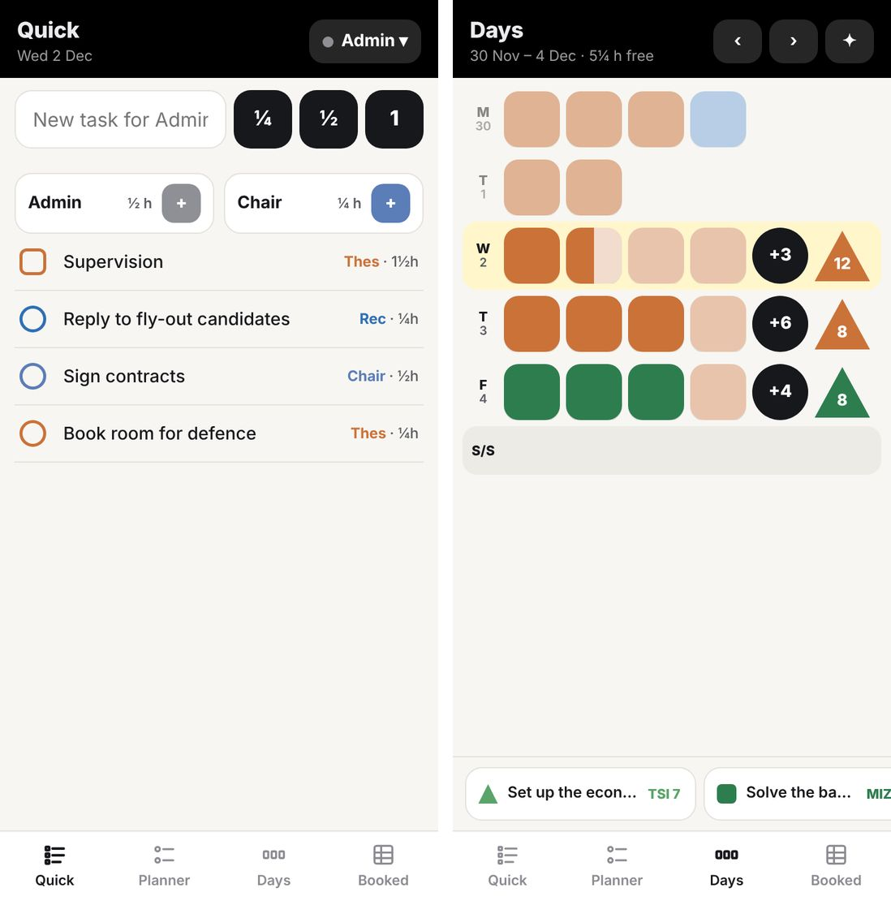
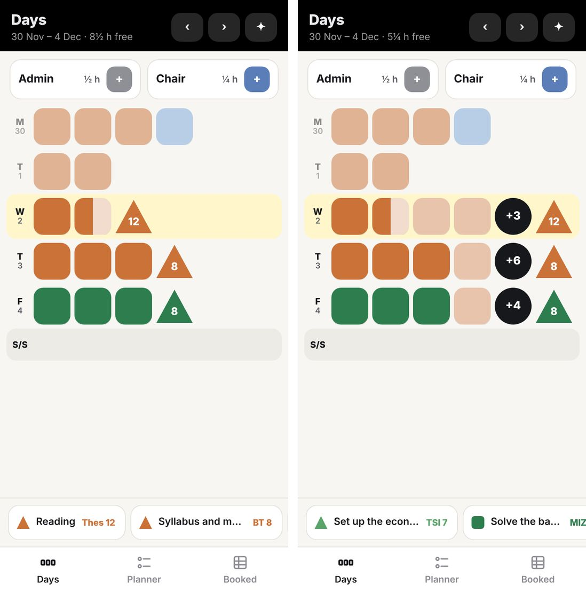
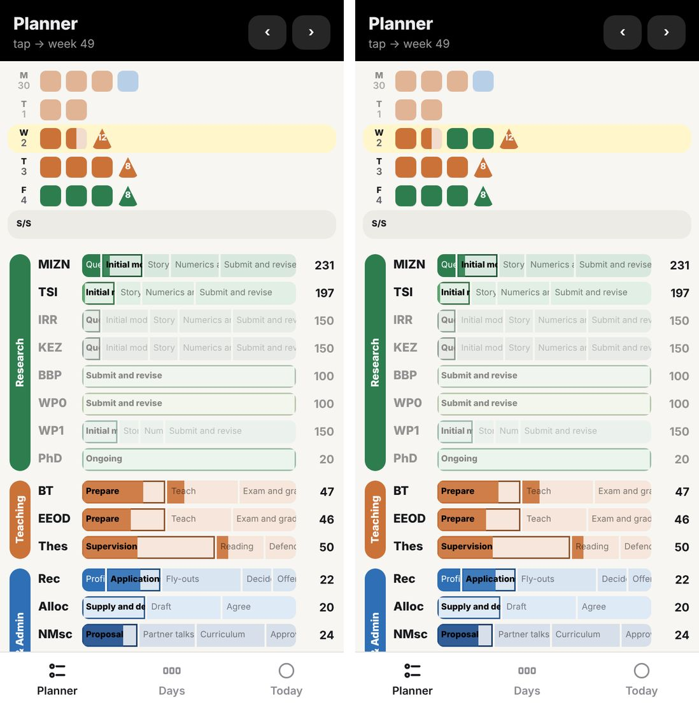
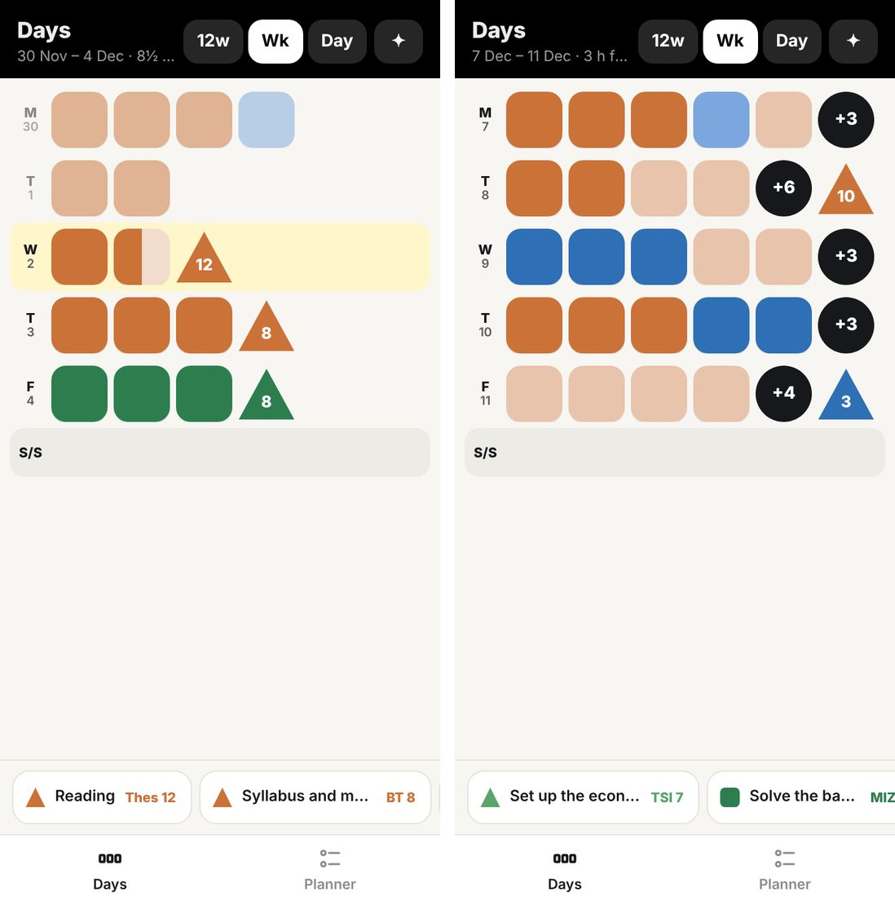
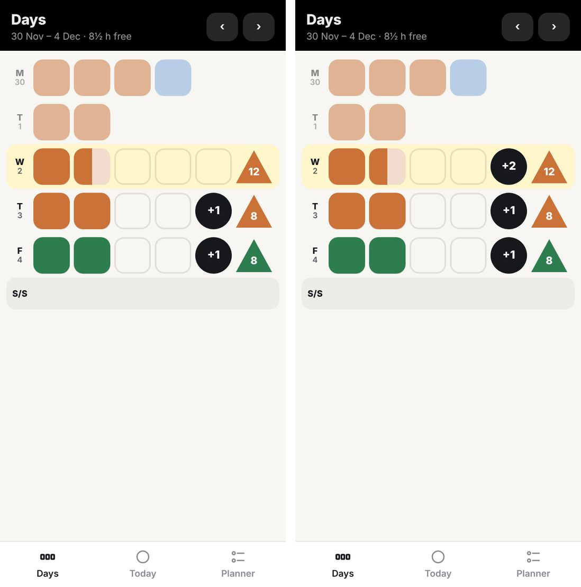
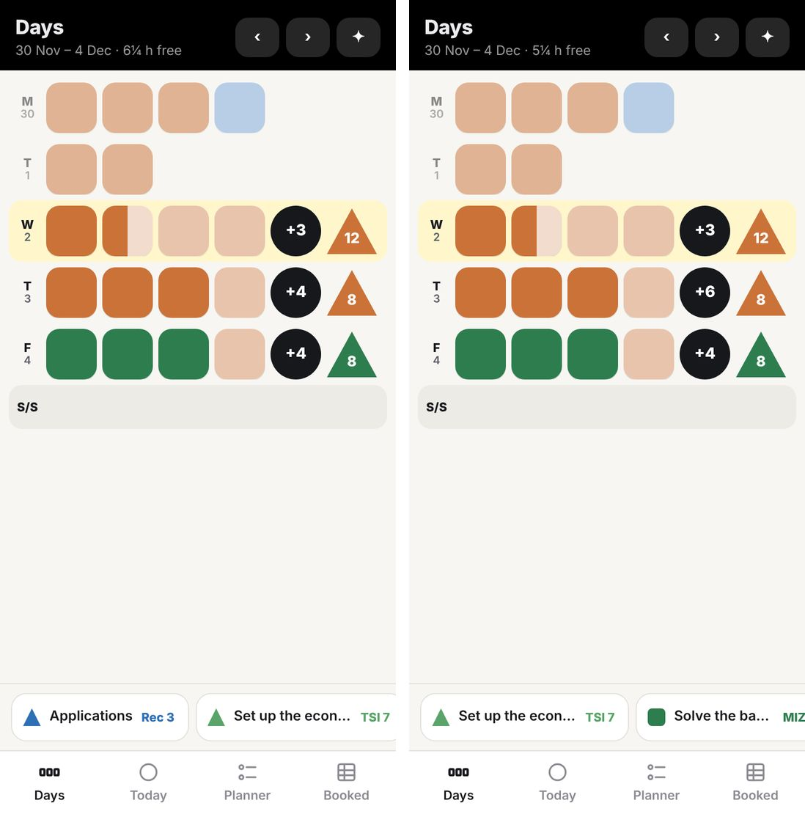
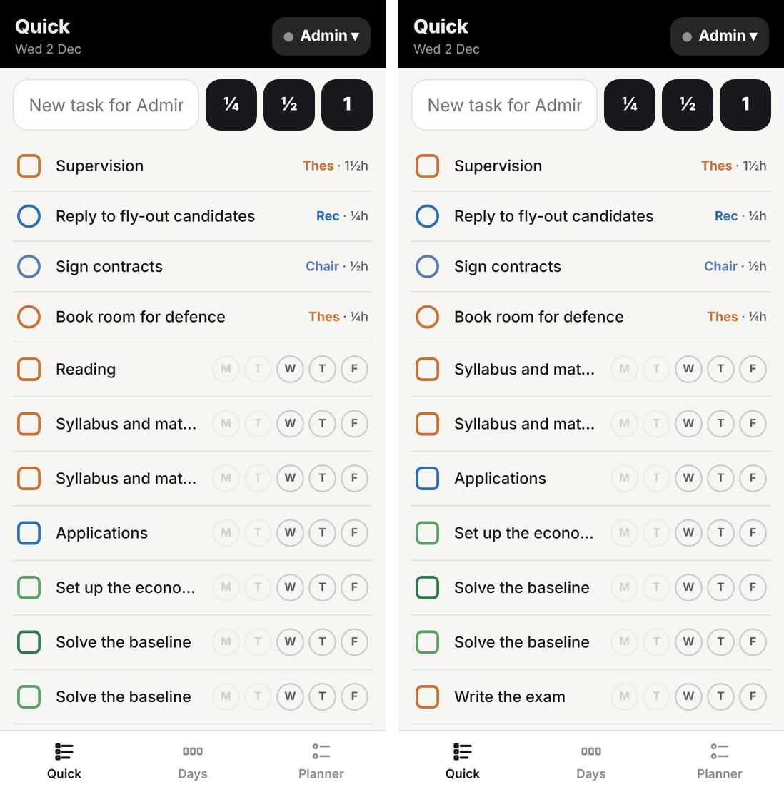
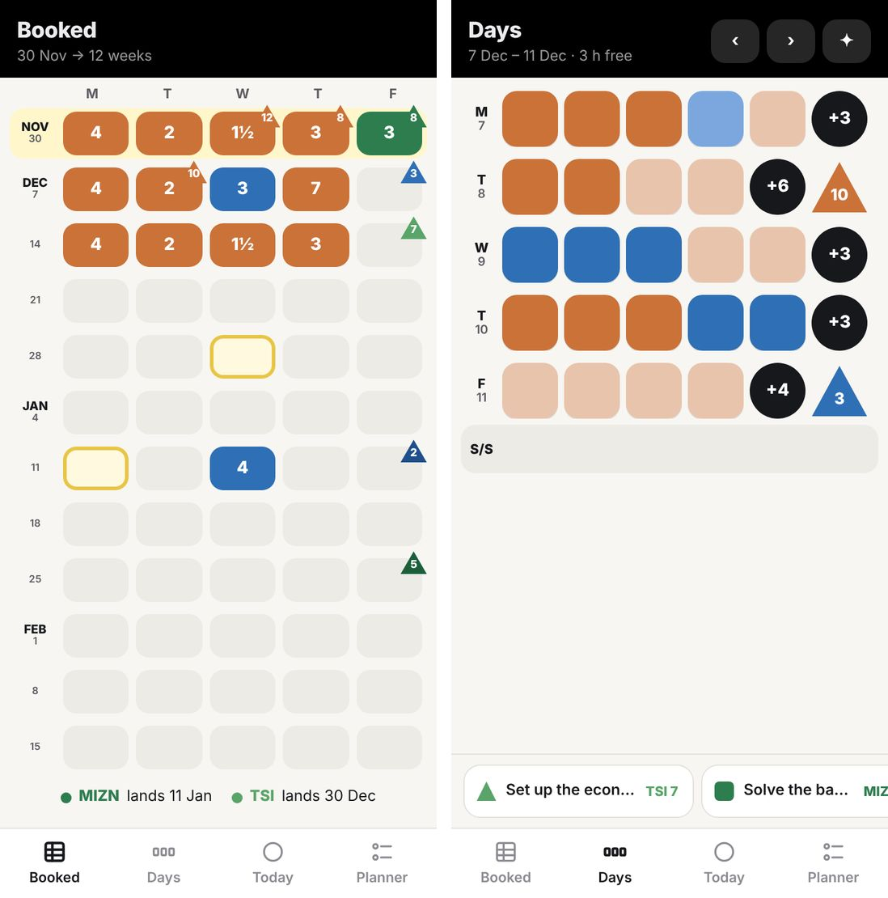
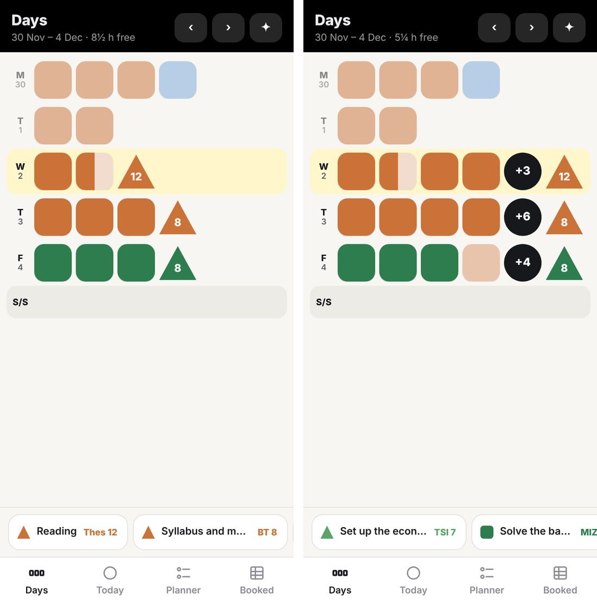
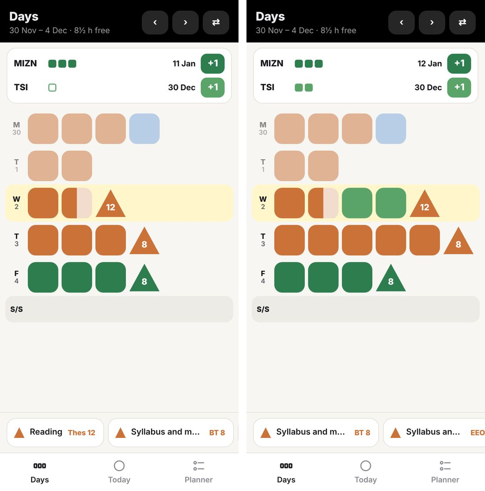

Ten ideas for planning the week, all in the original Hours look: black bar, Planner bars, Days squares, numbered ▲, Booked tiles and the Quick list. Each covers 12 weeks, the week and the day.

01TrayThe original four tabs. Days gets a tray of tasks along the bottom: tap one, then a day, and it becomes squares. ✦ fills the rest. Quick is the day list.Open Tray
02TickNo separate day screen. Today is the yellow row in Days: tap its squares to tick them off. The other rows are for planning from the tray.Open Tick
03FunnelPlan from the Planner. Tap a project row and its next task drops into the day with the most room this week. Days shows the result; Today ticks it off.Open Funnel
04ZoomOne screen that zooms, like the original 12w and Year pills: 12 weeks, one week, one day. Tap a week to zoom in.Open Zoom
05SlotsEvery free research hour is an empty square in its day. Tap an empty square and choose what fills it. No dragging and no tray.Open Slots
06AutoThe week fills itself when you open it. You only correct it: tap a square and send it back to the tray or move it to another day. Then tick the day off.Open Auto
07QuickQuick is home. Each quick task and next task has five day dots: tap a dot to put it on that day. Today’s list sits on top.Open Quick
08BookedBooked is home: twelve weeks of tiles. Tap a week to plan it in Days with the tray, then tick it off in Today. The yellow tile is the day a research stage lands.Open Booked
09DeadlineDeadlines lead. Each ▲ shows the hours still needed. Tap it and those hours spread over the days before it, as squares. The tray starts with deadline tasks.Open Deadline
10PairThe two active research projects sit on top of Days, with their hours this week and the date they land. +1 books an hour on the day with most room. Everything else comes from the tray.Open Pair